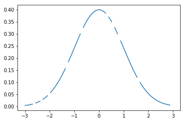
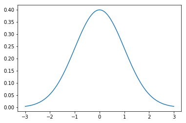

import numpy as np
import pandas as pd
import scipy.stats as stats
import matplotlib.pyplot as plt
import math
import warnings
warnings.filterwarnings('ignore')
%matplotlib inline평균
탐색적 데이터 분석 (Exploratory Data Analysis)를 진행하다보면, 매우 흔한 확률로 결측치가 존재하는 것을 볼 수 있습니다.
우리는 이런 경우 결측치를 버릴건지(drop), 혹은 채워주어야 합니다.
그러나, 데이터를 함부로 drop하여 머신러닝 예측을 진행한다는 것은 꽤 risk 하기도 합니다. 물론 결측치가 매우 적은 경우엔 그냥 drop하는 것이 맞을 수 있습니다.
하지만, 결측치가 꽤 많이 존재하는 경우, 혹은 우리가 예측해야할 test set의 feature 데이터에 존재하는 경우에는 결측치를 채워줄 수 밖에 없습니다.
결측치를 채워 줄 때 흔히 사용되는 방법은 0 이나 -1로 단순하게 채워주거나, 조금 더 발전된 방법은 mean이나 median으로 채워주는 방법입니다. 조금 더 나아간다면, 분류형 컬럼을 기준으로 groupby하여 mean이나 median으로 채워줄 수 있겠네요.
하지마, 시계열(Time Series) 데이터나 연속된 수치를 가지는 데이터의 경우에는 우리는 일종의 연속성있는 패턴을 발견할 수 있습니다. 이런 경우 보간(Interpolation)을 통해 앞,뒤 값을 통하여 유추하여 좀 더 스마트하게 결측치(NaN)를 채워줄 수 있습니다.
대부분, Pandas에 이런 유용한 기능이 내장되어 있는 점을 모르는 분들이 많은데, 이번 포스팅에서는 결측치에 대하여 보간(Interpolation) 처리를 해주는 방법에 대하여 알아보도록 하겠습니다.
참고(Reference) - Pandas 공식 도큐먼트
실습을 위하여 Normal Distribution을 따르는 샘플을 생성하도록 하겠습니다.
mu = 0
# 분산
variance = 1
# sigma (Standard Deviation 계산)
sigma = math.sqrt(variance)
x = np.linspace(mu - 3*sigma, mu + 3*sigma, 100)
# 랜덤한 10개의 데이터를 삭제합니다.
idx = np.random.choice(len(x), size=10)
x[idx] = np.nan
# 시각화
plt.plot(x, stats.norm.pdf(x, mu, sigma))
plt.show()
총 10개의 NaN 값을 만들었습니다.
pd.Series(x).isnull().sum()10중간 중간에 NaN값이 포진해 있는 것을 확인할 수 있습니다.
pd.Series(x).head(20)0 -3.000000
1 -2.939394
2 -2.878788
3 -2.818182
4 -2.757576
5 -2.696970
6 NaN
7 -2.575758
8 -2.515152
9 -2.454545
10 -2.393939
11 NaN
12 -2.272727
13 -2.212121
14 -2.151515
15 -2.090909
16 NaN
17 -1.969697
18 -1.909091
19 -1.848485
dtype: float64보간 (Interpolation)을 활용한 결측치 대입
주요 Hyperparameter
methodstr, default linear Interpolation technique 지정
-linear: 색인을 무시하고 값을 동일한 간격으로 처리 (MultiIndexes에서 지원되는 유일한 방법)
time: 주어진 간격의 길이를 보간하기 위해 매일 더 높은 해상도 데이터를 처리index,values: 인덱스의 실제 숫자 값을 사용pad: 기존 값을 사용하여 NaN 채우기nearest,zero,slinear,quadratic,cubic,spline,barycentric,polynomial: scipy.interpolate.interp1d로 전달. 이 방법은 색인의 숫자 값을 사용.polynomial과spline모두 순서 (int)도 지정해야합니다 (예 : df.interpolate (method=‘polynomial’, order=5).krogh,piecewise_polynomial,spline,pchip,akima: 비슷한 이름의 SciPy 보간 방법을 둘러싼 Wrapper.from_derivatives: scipy 0.18의piecewise_polynomial보간 방법을 대체하는 scipy.interpolate.BPoly.from_derivatives를 참조
axis{0 or index, 1 or columns, None}, default None 보간할 축 설정
limitint, optional 채울 최대 연속 NaN 갯수. 0보다 커야함.
inplacebool, default False 데이터 업데이트 (if possible)
limit_direction{forward, backward, both}, default forward limit이 지정되면, 연속 NaN이 지정된 방향으로 채워집니다.
limit_area{None, inside, outside}, default None limit이 지정되면, 연속된 NaN은 지정된 제한(restriction)으로 채워집니다.
None: No fill restriction.
inside: 유효한 값으로 둘러싸인 NaN 만 채 웁니다 (보간).outside: 유효 값을 초과하는 NaN 만 채 웁니다 (외삽).
(New in version 0.23.0.)
downcastoptional, infer or None, defaults to None Downcast dtypes if possible.
x_inter = pd.Series(x).interpolate()x_inter.head(20)0 -3.000000
1 -2.939394
2 -2.878788
3 -2.818182
4 -2.757576
5 -2.696970
6 -2.636364
7 -2.575758
8 -2.515152
9 -2.454545
10 -2.393939
11 -2.333333
12 -2.272727
13 -2.212121
14 -2.151515
15 -2.090909
16 -2.030303
17 -1.969697
18 -1.909091
19 -1.848485
dtype: float64보간(Interpolation) 이후 채워진 값에 대한 시각화
plt.plot(x_inter, stats.norm.pdf(x_inter, mu, sigma))
plt.show()